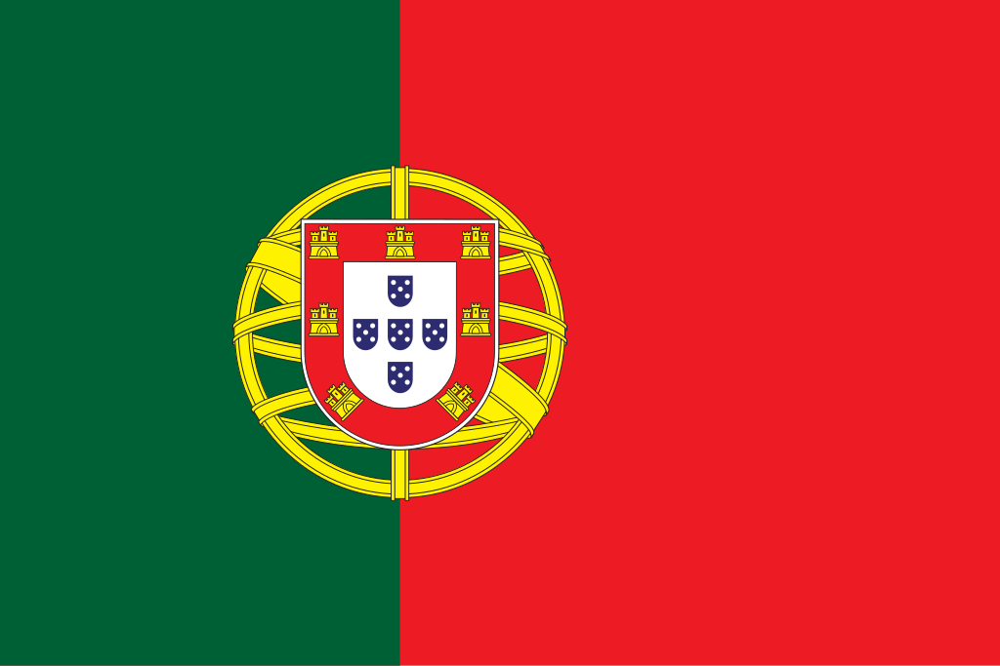

Portugal
 Portugal, oficialmente República Portuguesa, é um país localizado no extremo sudoeste da Europa, ocupando a maior parte do território da Península Ibérica, com fronteira a leste e norte com a Espanha e banhado pelo Oceano Atlântico a oeste e sul. Sua capital é Lisboa, situada na região costeira, conhecida por sua história, cultura e importância econômica. Com cerca de 92.000 km², Portugal é um país de dimensão relativamente pequena, mas de grande relevância histórica e cultural. Sua população é de aproximadamente 10,3 milhões de habitantes, majoritariamente de origem europeia, com comunidades africanas, brasileiras e asiáticas. Portugal é membro da União Europeia, ONU, NATO e Comunidade dos Países de Língua Portuguesa (CPLP), e sua história está profundamente ligada à exploração marítima e ao legado colonial.
História
A história de Portugal é marcada por uma trajetória de consolidação territorial, exploração marítima e influência cultural. Os primeiros habitantes conhecidos foram povos pré-romanos, como os lusitanos e celtas, que resistiram à expansão romana. Com a chegada dos romanos, a região foi integrada ao Império Romano, tornando-se próspera e urbanizada, com cidades como Olisipo (atual Lisboa) e Bracara Augusta (Braga). Após a queda do Império Romano, Portugal foi invadido por suevos, visigodos e posteriormente pelos mouros, que dominaram parte do território no século VIII.
Durante a Reconquista Cristã, a formação de condados e a resistência frente aos invasores muçulmanos consolidaram os fundamentos do reino português, oficializado em 1143 com o Tratado de Zamorra. Nos séculos XV e XVI, Portugal tornou-se uma potência marítima global, com navegadores como Vasco da Gama e Fernão de Magalhães estabelecendo rotas comerciais para África, Ásia e América do Sul, resultando em um vasto império colonial. Entre os séculos XVII e XIX, o país enfrentou crises políticas, invasões napoleônicas e a perda de territórios ultramarinos, culminando na instauração da República em 1910. O século XX foi marcado por ditaduras, revoluções e consolidação democrática após a Revolução dos Cravos de 1974. Atualmente, Portugal mantém uma democracia estável, com economia baseada em serviços, turismo e exportação de produtos tradicionais e tecnológicos.
Cultura
A cultura de Portugal reflete uma fusão de tradições mediterrânicas, atlânticas e coloniais, com forte influência cristã e latina. A música popular inclui o fado, expressão melancólica e poética das emoções humanas, e as danças e festivais regionais que celebram a história local. A literatura portuguesa é rica, com autores consagrados como Luís de Camões, Fernando Pessoa e José Saramago, cujas obras exploram identidade, história e questões sociais. A gastronomia é marcada pelo uso de produtos do mar, azeite, vinhos e especiarias herdadas do período colonial, com pratos típicos como bacalhau, caldo verde, pastéis de nata e frutos do mar.
A língua oficial é o português, que se espalhou pelo mundo durante a expansão marítima, tornando-se um dos idiomas mais falados globalmente. As artes visuais, arquitetura e artesanato mostram a diversidade de influências, incluindo o manuelino, barroco, românico e contemporâneo. Festividades religiosas e populares, como o Carnaval, as festas de São João e São Pedro, e as celebrações em honra a santos padroeiros, são elementos centrais da vida cultural portuguesa. Museus, galerias, teatros e centros culturais preservam e promovem tanto a herança histórica quanto a produção artística contemporânea do país.

Clima
Portugal apresenta grande diversidade climática, influenciada por sua posição geográfica e relevo variado. O clima mediterrâneo domina a maior parte do território, com verões quentes e secos e invernos suaves e chuvosos, especialmente nas regiões costeiras. No interior, o clima é mais continental, com verões quentes e secos e invernos frios, frequentemente com geadas e neve em algumas regiões montanhosas. O arquipélago da Madeira apresenta clima subtropical, enquanto os Açores possuem clima temperado oceânico, com chuvas frequentes e temperaturas amenas. Essa diversidade climática permite o cultivo de vinhos, azeite, frutas e hortaliças, além de possibilitar turismo durante todas as estações do ano.
Biodiversidade
Portugal possui biodiversidade variada, com ecossistemas que vão de áreas costeiras e estuários a florestas mediterrânicas e montanhas interiores. O país abriga espécies endêmicas de flora e fauna, incluindo aves migratórias, mamíferos terrestres e espécies marinhas. As áreas protegidas, como o Parque Nacional da Peneda-Gerês e a Reserva Natural do Estuário do Tejo, visam preservar habitats sensíveis e espécies ameaçadas, garantindo o equilíbrio ecológico e a continuidade da pesquisa científica e turismo sustentável.
As pressões humanas, como urbanização, agricultura intensiva e turismo descontrolado, representam desafios para a conservação. O governo português desenvolve programas de proteção ambiental, reflorestamento e educação ecológica, valorizando a preservação da biodiversidade e a sustentabilidade dos recursos naturais do país.


Cidades
As cidades de Portugal combinam história, cultura e modernidade. Lisboa, a capital, é centro político, econômico e cultural, com bairros históricos, miradouros, museus e porto estratégico. Porto, segunda maior cidade, destaca-se pela produção de vinho, arquitetura histórica e revitalização urbana. Outras cidades, como Coimbra, Braga e Faro, têm relevância histórica, educacional e turística, oferecendo patrimônio arquitetônico, vida universitária e festividades tradicionais. O planejamento urbano prioriza preservação histórica, qualidade de vida e integração com áreas verdes e costeiras.
As cidades portuguesas desempenham papel central na economia, serviços e turismo, refletindo a diversidade cultural, o desenvolvimento econômico e a forte ligação com a tradição e história do país. A combinação de cidades modernas e patrimônio histórico torna Portugal um destino culturalmente rico e atrativo para residentes e visitantes.